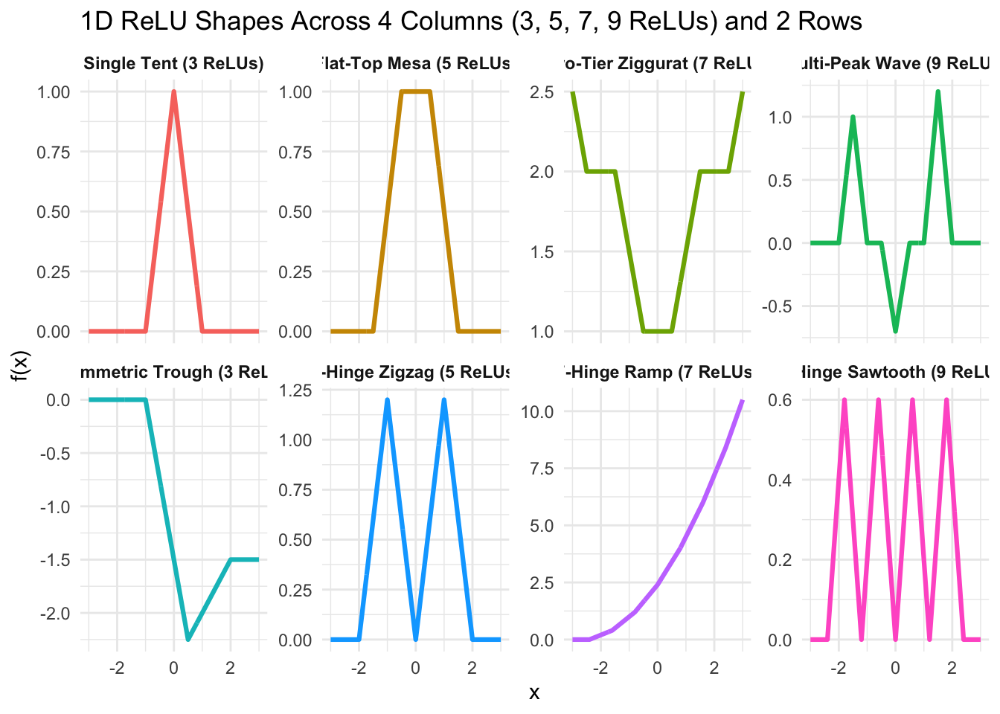

Today we begin our brief (three-class) tour of neural network methods. While neural networks fell out of favor for many years, they are absolutely having a renaissance as the methods that underlie a decade and a half of remarkable advances in image and text processing. The successes of neural networks for modeling of tabular data have not been quite as stunning, but you will see an example of some quite powerful new approaches in your final problem set.
Before we get into details, it’s worth pausing to discuss the neural in neural networks. Neural network methods are quite old, dating from the first few decades from machine learning and were designed to mimic pioneering work from that ear on neuronal (brain cell) function. At this point, the reference to individual neurons is more metaphor than mechanism (at least to my mind) as modern neural networks are far removed from those early forays. As we will see, in at least one application domain (supervised image classification), neural networks do seem to operate in a manner similar to the human brain (specifically the visual cortex), but the more direct connection is to classical EE/CS approaches to image processing. (If an idea is ‘right’, it’s perhaps not surprising that both physical and digital systems converge on it.) Inverting the relationship, the remarkable success of these methods in text data has lead some researchers to attempt to understand the brain as functioning like a modern LLM; the verdict is still out on those efforts.
For our purposes, we will treat the neural lingo as a rather idiosyncratic set of jargon choices (even within a field that isn’t known for the clarify of its jargon). If you are already quite knowledgeable about actual neuroscience, I ask your patience with some of the lingo. I don’t take it all that literally and I recommend you don’t either.
So - disclaimers disclaimed - why are we interested in neural methods? In brief, they work remarkably well and we’re interested in things that work well. Modern applications of NNs include:
Image Processing:
Segmentation (dividing images into different ‘things’)
High-Cardinality Classification (what is an image a picture of?)
Generation (creating highly realistic images)
Text Processing:
Automatic translation
Text generation and completion
What do these methods have in common? At least three things stand out:
These are problems where our standard (tabular) methods cannot easily be applied without exceptionally complicated pre-processing. Even then, tabular methods tend not to perform all that well
These are domains with absolutely enormous training sets
Any mechanistic relationship (if we choose to believe one exists) is incredibly complex and our traditional approach of ‘(nearly) linearize, average some stuff, and hope for the best’ stands no real chance of working.
These motivate at least one philosophy of neural methods: flexible, universal function approximators. We apply these methods in ‘enormous \(n\)’ regimes, where we seek to model a very complex underlying relationship and we have the data necessary to do so. Obviously, there is quite a lot to argue for this perspective: neural networks seem to do \(\approx\) anything (at least in the right hands) and they are incredibly data hungry. But why neural networks? After all, we have already seen several universal approximators, from \(K\)-NN to (maximal) decision trees.
While it seems that your favorite LLM can do anything, this doesn’t actually seem to be the case. The neural networks that dominate image classification are very different from those that specialize in text generation. When you see ChatGPT translating ancient Sumerian and generating images of thundering herds of nature’s most noble beast (the basset hound), there are several quite distinct systems at work under the hood.1
Any story about universality has to reckon with the fact that it is the category of neural networks that seems to be universal, not any individual neural network. What is it that makes one type of neural network good for Task A and a different type good for Task B?
Structurally, it’s a matter of design. A model built to take in (fixed size) images and produce a scalar label (an image classifier) necessarily has a different structure (architecture) than a model that takes in an arbitrary text string and produces an image. But it’s more than just a matter of ‘fitting’ the input and output spaces: the guts of these different models are quite different. Specifically, we design them to emphasize (or de-emphasize) different aspects of our data. While an image classifier should probably give the same label if an image is flipped along its vertical axis, reversing a sentence fundamentally changes its meaning. (A penguin looking to the left and a penguin looking to the right are both obviously penguins, but the sentences “My wife is too good for me.” and “I am too good for my wife.” are different on a very deep level, even beyond their literal meaning.)
This suggests to use that neural networks exhibit a strong inductive bias: that is, their structure inclines-or sometimes even forces-them to interpret data in a particular way and to identify and rely on certain types of patterns. Inductive bias is clearly not unique to neural networks - as we’ve discussed, all the different methods we’ve considered fit different types of patterns, from the (linear) relationships found by linear regression to the Mondrian-type patterns of decision trees. But this concept plays a more central role in neural networks: classical methods tend to use rather rough-and-ready inductive biases (decision trees work well for any function that can be well approximated by a step function, a class so broad as to be practically meaningless) while neural networks are quite deeply optimized for individual problems.
You might remark that individual machine learners don’t actually do that sort of deep optimization. The explosive growth of these methods seems to be in part a reflection of the fact that ‘off the shelf’ methods - sometimes even pre-trained models where the weights are not learned from data, but just downloaded off a website - are incredibly performant. One ‘sociological’ theory of the past 15-20 years of machine learning is that, as a field, we have run a giant search over \(\approx\) all possible neural networks and those that thrived have done so precisely because they work well on so many problems.2 I find this quite compelling: there’s no real reason to think that any random neural network will be fantastic for any particular task, but the specific methods we have identified are indeed quite remarkable: the ‘marketplace of ideas’ has been enormously successful in the field of machine learning.
Looking ahead, this sets the stage for our discussion of neural methods:
Today, we’ll talk about the general ideas that underlie all neural network methods
Next week, we’ll spend two classes talking about specific network architectures, the inductive biases they generate, and what that implies about interpretation and potential failure modes.
Neural Architectures
So, without being too specific, we have a view of neural networks as a sort of universal approximator across all non-linear functions. The class of all non-linear functions is clearly too broad to work with directly, so what does this look like in practice?
As it has been so many times before, our starting point is linear models which we tweak to generate our relevant non-linearity. In the neural context, we are motivated by actual neurons: to a reasonable approximation, actual neurons take in electro-chemical signals from multiple inputs (sensory nerves or other neurons) at its input points (dendrites), aggregates them, and if they exceed some threshold, send a signal outwards via the axon. Mathematically, we might have something like this:
To make a deep neural network, we simply start nesting this type of structure using the output of one function as the input to the next. (In the biological analogy, one neuron feeds into another and the output of that neuron is the input to yet another, etc.) This gives us something like:
In this case, the intermediate values can be vectors of values (instead of scalars) and we interpret things as vectors and matrices, applying \(f(\cdot)\) pointwise as needed. This type of simple structure can produce remarkable complexity. To wit: I have generated several shapes below using different numbers of layers (intermediate steps).
# Generated by Gemini after some back and forthlibrary(ggplot2)relu<-function(z)pmax(0, z)x<-seq(-3, 3, length.out =601)# --- Row 1: Structured / nested shapes (3, 5, 7, 9 ReLUs) ---# Col 1 (3 ReLUs): Single tent y = ReLU(1 - |x|)y_r1_c1<-sapply(x, function(xi){abs_x<-relu(xi)+relu(-xi)# 2 ReLUsrelu(1-abs_x)# +1 ReLU -> 3 total})# Col 2 (5 ReLUs): Flat-top mesa on [-1.5, 1.5]y_r1_c2<-sapply(x, function(xi){u1<-relu(xi+1.5)# 1u2<-relu(-xi+1.5)# 2u3<-relu(xi+0.5)# 3u4<-relu(-xi+0.5)# 4relu((u1-u3)+(u2-u4)-1)# +1 ReLU -> 5 total})# Col 3 (7 ReLUs): Nested two-tier ziggurat / step-pyramidy_r1_c3<-sapply(x, function(xi){r1<-relu(xi+1.5)# 1r2<-relu(-xi+1.5)# 2outer<-relu(r1+r2-3.0)# 3notch<-relu(1.0-outer)# 4s1<-relu(xi+0.5)# 5s2<-relu(-xi+0.5)# 6inner<-relu(s1+s2-1.0)# 7 -> 7 totalnotch+inner})# Col 4 (9 ReLUs): Multi-peak / valley wave from 3 tents (3 * 3 = 9 ReLUs)y_r1_c4<-sapply(x, function(xi){peak_at<-function(center, amp){z<-2*(xi-center)amp*relu(1-(relu(z)+relu(-z)))# 3 ReLUs per peak}peak_at(-1.5, 1.0)+peak_at(0.0, -0.7)+peak_at(1.5, 1.2)# 9 total})# --- Row 2: Contrasting shapes with matching ReLU counts (3, 5, 7, 9 ReLUs) ---# Col 1 (3 ReLUs): Asymmetric V-trough / bendy_r2_c1<-sapply(x, function(xi){-1.5*relu(xi+1.0)+2.0*relu(xi-0.5)-0.5*relu(xi-2.0)# 3 total})# Col 2 (5 ReLUs): 5-hinge alternating zigzagknots5<-seq(-2.0, 2.0, length.out =5)signs5<-c(1.2, -2.4, 2.4, -2.4, 1.2)y_r2_c2<-sapply(x, function(xi){sum(signs5*relu(xi-knots5))# 5 total})# Col 3 (7 ReLUs): Monotonic 7-hinge ramp / staircaseknots7<-seq(-2.4, 2.4, length.out =7)y_r2_c3<-sapply(x, function(xi){0.5*sum(relu(xi-knots7))# 7 total})# Col 4 (9 ReLUs): 9-hinge high-contrast sawtooth combknots9<-seq(-2.4, 2.4, length.out =9)signs9<-c(1, -2, 2, -2, 2, -2, 2, -2, 1)y_r2_c4<-sapply(x, function(xi){sum(signs9*relu(xi-knots9))# 9 total})facet_labels<-c( r1_c1 ="Single Tent (3 ReLUs)", r1_c2 ="Flat-Top Mesa (5 ReLUs)", r1_c3 ="Two-Tier Ziggurat (7 ReLUs)", r1_c4 ="Multi-Peak Wave (9 ReLUs)", r2_c1 ="Asymmetric Trough (3 ReLUs)", r2_c2 ="5-Hinge Zigzag (5 ReLUs)", r2_c3 ="7-Hinge Ramp (7 ReLUs)", r2_c4 ="9-Hinge Sawtooth (9 ReLUs)")df<-rbind(data.frame(x =x, y =y_r1_c1, shape ="r1_c1"),data.frame(x =x, y =y_r1_c2, shape ="r1_c2"),data.frame(x =x, y =y_r1_c3, shape ="r1_c3"),data.frame(x =x, y =y_r1_c4, shape ="r1_c4"),data.frame(x =x, y =y_r2_c1, shape ="r2_c1"),data.frame(x =x, y =y_r2_c2, shape ="r2_c2"),data.frame(x =x, y =y_r2_c3, shape ="r2_c3"),data.frame(x =x, y =y_r2_c4, shape ="r2_c4"))df$shape<-factor(df$shape, levels =names(facet_labels))ggplot(df, aes(x =x, y =y, color =shape))+geom_line(linewidth =1.1)+facet_wrap(~shape, scales ="free_y", ncol =4, labeller =labeller(shape =facet_labels))+labs( title ="1D ReLU Shapes Across 4 Columns (3, 5, 7, 9 ReLUs) and 2 Rows", x ="x", y ="f(x)")+theme_minimal(base_size =11)+theme( legend.position ="none", strip.text =element_text(face ="bold"))

Clearly, more steps gives us more expressivity (more possible shapes) but even in this simple 1D example, we can generate an impressive variety.
So what activation function\(f\) should we choose here? ReLU, gradients, sigmoids and gradient decay, etc
Footnotes
Hadley Wickham has a very nice series of posts explaining the concepts of tools and harnesses within a larger LLM: